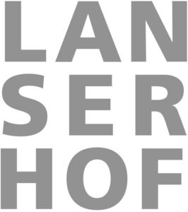

Trade Mark Journal No.2025/031 1 August 2025
WO0000001858373 (3,4,5,9,16,18,20,21,24,25,28,29,30,32,35,41,43,44)
Office of origin: European Union Intellectual Property Office (EUIPO)
Date of International Registration:20 August 2024
Date of designation in the UK:
20 August 2024

International priority date claimed: 21 February 2024
(European Union Intellectual Property Office (EUIPO))
(018988645)
- Class 3
- Cleaning and fragrancing preparations; cosmetics; cosmetics and cosmetic preparations; household fragrances; moisturizers; natural cosmetics; natural cosmetics; hair nourishers; beauty care cosmetics; dermatological creams [other than medicated]; perfumes; oils for perfumes and scents; essential oils and aromatic extracts; body cleaning and beauty care preparations; cosmetics; facial preparations; cosmetic preparations for body care; cosmetic preparations for use as aids to slimming; slimming aids [cosmetic], other than for medical use; cosmetics for personal use; cosmetics in the form of oils; non-medicated cosmetics and toiletry preparations; oils for toilet purposes; oils for cosmetic purposes; massage oils and lotions; emollient preparations [cosmetics]; massage oils; massage candles for cosmetic purposes; organic cosmetics; hair care creams; hair moisturisers; hair moisturising conditioners; hair masks; hair care masks; non-medicated hair shampoos; cosmetic hair dressing preparations; hair care lotions; shampoos; cleaning and fragrancing preparations, other than for personal use; ethereal essences; ethereal essences and oils; aromatherapy preparations; essential oils for aromatherapy use; essential oils for soothing the nerves; essential oils for use in the manufacture of scented products; floral water; essential oil-based creams for aromatherapy use; scented oils; natural essential oils; perfume oils for the manufacture of cosmetic preparations; flavourings for beverages [essential oils]; aromatics [essential oils]; essential vegetable oils; skin care oils [non-medicated]; shower and bath gel; shower and bath foam; shower preparations; body mist; bath preparations; bath and shower preparations; body and facial oils; body and facial butters; hair and body wash; hair preparations and treatments; hand washes; skin, eye and nail care preparations; skin care preparations; body massage oils; washing preparations for personal use; body and facial creams [cosmetics]; body and facial gels [cosmetics]; herbal extracts for cosmetic purposes; beauty lotions; almond oil for cosmetic purposes; cosmetics for use on the skin; non-medicated foot soaks; procollagen for cosmetic purposes; recovery creams for cosmetic use; cosmetics in the form of creams; non-medicated beauty preparations; soaps and gels; soap free washing emulsions for the body; body washes; make-up preparations; beauty balm creams; cosmetic preparations for bath and shower; functional cosmetics; non-medicated face care preparations; toiletries; cleansers; toner; night serums; facial serum; eye cream; night cream; facial washes [cosmetic]; hand creams; body lotions; body sprays; shampoos; hair conditioners; dental cream; body oils [for cosmetic use]; sauna oils; herbal oils; massage oils; fragrance sachets for eye pillows; aromatherapy lotions; body butter; body gels; exfoliating scrubs for the feet; aromatics for fragrances; bubble bath; cosmetic preparations for baths; bath preparations, not for medical purposes; scented room sprays.
- Class 4
- Fuels and illuminants; electrical energy; perfumed candles; aromatherapy fragrance candles; candles; candles in tins; candle assemblies; soy candles; tapers for lighting; beeswax.
- Class 5
- Medicinal healthcare preparations; sanitary preparations and articles; dermatological preparations; medicinal drinks; dietetic beverages adapted for medical purposes; pharmaceutical preparations and substances; dietetic foods adapted for medical purposes; dietetic foods for use in clinical nutrition; gastrointestinal preparations; biological preparations for medical purposes; pharmaceuticals and natural remedies; nutritional supplements; dietetic substances adapted for medical use; medicinal preparations and substances; tisanes [medicated beverages]; vitamin fortified beverages for medical purposes; vitamin and mineral preparations; quassia for medical purposes; herbal medicine; medicinal herbs; liquid herbal supplements; herbal creams for medical use; herbal sprays for medical use; herbal beverages for medicinal use; herbal extracts for medical purposes; herbal preparations for medical use; herbal mud packs for therapeutic use; herbal compounds for medical use; herbal extracts for medical purposes; plant and herb extracts for medicinal use; herbal dietary supplements for persons special dietary requirements; transdermal patches for medical treatment; adhesive tapes for medical purposes; medicinal tea; food supplements for non-medical purposes; diabetic bread adapted for medical use; dietary supplements and dietetic preparations; pharmaceutical preparations; biochemical preparations for medical use; biotechnological preparations for medical use; medicated cosmetics; medical body and facial care preparations; medicated hair care preparations; creams for dermatological use; ointments, for use in the following fields: treatment of skin diseases; anti-oxidants derived from honey; linseed dietary supplements; linseed oil dietary supplements; medical preparations for slimming purposes; dental preparations; medicated toothpaste, medicated mouth rinses; dental wax; medicated dentifrices; pharmaceutical preparations for the treatment of osteoporosis; pharmaceutical preparations for the treatment of disorders of the metabolic system; pharmaceutical preparations for the treatment of inflammatory disorders; pharmaceutical preparations and substances for the treatment of gastro-intestinal diseases; pharmaceutical products for the treatment of bone diseases; pharmaceutical preparations for treating skin disorders; pharmaceutical preparations for the treatment of immune system related diseases and disorders; food for infants; plasters, materials for dressings; vitamin supplement patches; transdermal patches; medicated plasters; plasters incorporating a magnet; bunion pads; creams (medicated -) for the feet; hygienic preparations and articles; air deodorising and air purifying preparations; appetite stimulant preparations; dietary fibre; sugar substitutes for diabetics; nutritional supplement meal replacement bars for boosting energy; food supplements consisting of amino acids; dietary supplements consisting of vitamins; food supplements consisting of trace elements; anti-oxidant food supplements; whey protein dietary supplements; folic acid dietary supplements; wheat dietary supplements; nutritional supplements; protein dietary supplements; soy protein dietary supplements; health food supplements made principally of vitamins; vitamins and vitamin preparations; therapeutic preparations for the bath; health food supplements for persons with special dietary requirements; probiotic supplements; bee pollen for use as a dietary food supplement; pharmaceutical preparations and substances with anti-inflammatory properties; pharmaceutical preparations and substances with analgesic properties; pharmaceutical preparations for the treatment of diseases of the endocrine system; pharmaceutical preparations for the treatment of gout; pharmaceutical preparations and substances for the prevention of cancer; extracts of medicinal plants; medicinal preparations for the treatment of infectious diseases; pharmaceutical preparations for treating sunburn; remedies for perspiration; dietary supplemental drinks; protein supplement shakes; powdered fruit-flavored dietary supplement drink mix; vitamin drinks; allergy relief medication; soporifics; antidepressants.
- Class 9
- Connected bracelets [measuring instruments]; scientific research and laboratory apparatus, educational apparatus and simulators; apparatus, instruments and cables for electricity; downloadable and recorded content; information technology and audio-visual, multimedia and photographic devices; magnets, magnetizers and demagnetizers; measuring, detecting, monitoring and controlling devices; navigation, guidance, tracking, targeting and map making devices; optical devices, enhancers and correctors; safety, security, protection and signalling devices; scientific and laboratory devices for treatment using electricity; mobile apps; software for smartphones; measuring instruments; radio apparatus and instruments; goggles for sports; podcasts; downloadable podcasts; digital telecommunications apparatus; digital panel meters; personal digital assistants [PDAS]; virtual assistant software; data communications apparatus; data communications software; data processing systems; application software.
- Class 16
- Paper sacks; ball pens; invitation cards; appointment books; postcards and picture postcards; cards; books relating to fitness and sports; books on nutrition; cookery books; general feature magazines; magazines [periodicals]; promotional publications; stationery; teaching materials [except apparatus]; paper and cardboard; money holders; modelling materials and artists materials; medical journals; invitation cards; planners [printed matter]; geographical maps; broadsheets; pamphlets, magazines [periodicals] and prospectuses, in the following fields: fitness and health; printed matter, and stationery and educational supplies; brochures; spirit masters for mimeographing; magazines [periodicals]; advertising pamphlets; stickers [stationery]; stickers [stationery]; photographs [printed]; books; packaging materials; printed packaging materials of paper; drawing materials and materials for artists; filtering materials of paper; adhesives for stationery or household purposes; bags and articles for packaging, wrapping and storage, of paper, cardboard or plastics; printed matter; printed periodicals, in the following fields: health and fitness; photographs [printed]; type [numerals and letters]; newspapers; periodicals; labels of paper; printed paper labels; prospectuses; decorative stickers for helmets; teaching materials [except apparatus]; pictures; prints in the nature of pictures; 3d decals for use on any surface; announcement cards [stationery]; paper identification tags; transfers [decalcomanias]; tear-off calendars; stickers [decalcomanias]; paper tea filters; banners of paper; printed transfers for embroidery or fabric appliqués; printed cards; printed greeting cards with electronic information stored therein; printed advertising boards of cardboard; printed advertising boards of paper; picture postcards; picture cards; educational and instructional material; pads [stationery]; pamphlets; leather book covers; booklets relating to games; cardboard badges; guest books; printed brochures; printed vouchers; printed manuals; printed informational folders; printed charts; printed calendars; printed advertisements; printed emblems [decalcomanias]; printed promotional material; printed visuals; graphic reproductions; holiday cards; wrapping paper; packaging materials made of recycled paper; writing tablets; table napkins of paper; bags made of paper for packaging; paper doilies; leather covered diaries; stickers [stationery]; stickers [stationery]; gift wrap paper; gift packaging; gift wrap paper; bibs, sleeved, of paper; paper pennants; shields [paper seals]; metal money clips; non metal money clips; place cards; mapping pins; printed instructional material, in the following fields: health and medicine; packaging materials made from mineral-based paper substitutes.
- Class 18
- Beach bags; beach umbrellas [beach parasols]; beach umbrellas [beach parasols]; bags for sports; handbags, purses and wallets; travel bags made of plastic materials; shoulder bags; travelling bags; gentlemen's handbags; leather bags and wallets; cross-body bags; walking sticks; luggage, bags, wallets and carrying bags; umbrellas and parasols; saddlery, whips and apparel for animals; grocery tote bags; reusable shopping bags; holdalls for sports clothing; credit card cases [wallets]; drawstring pouches; toiletry bags; beach bags.
- Class 20
- Pillows; containers, and closures and holders therefor, non-metallic; statues, figurines, works of art and ornaments and decorations, made of materials such as wood, wax, plaster or plastic, included in the class; displays, stands and signage, non-metallic; furniture; beds; mattresses; cushions; bolsters.
- Class 21
- Drinking bottles; cups; water bottles; glass bottles; mugs of precious metal; tableware, cookware and containers; cloths and rags for cleaning; clothes-pegs; clothing strechers; brushes for cleaning footwear; adhesive rollers for cleaning; cleaning instruments, hand-operated; household utensils for cleaning, brushes and brush-making materials; hygiene and beauty care utensils; cosmetic utensils; eyelash brushes; toilet cleaning utensils; sponges for personal hygiene; fitted vanity cases; abrasive sponges for scrubbing the skin; bath sponges; make-up sponges; sponge holders; sponges for household purposes; cloths for cleaning; dusting cloths; polishing cloths; electric and non-electric combs and toothbrushes, dental floss, foam toe separators for use in pedicures, powder puffs, fitted vanity cases; combs and sponges; brushes, except paintbrushes; statues, figurines, plaques and works of art, made of materials such as porcelain, terra-cotta or glass, included in the class; works of art, decorations and sculptures made of ceramics or glass; unworked and semi-worked glass, not for building; unworked and semi-worked glass, except for building; hand soap racks; lotion containers, empty, for household use; bowls [basins]; soap boxes; soap containers.
- Class 24
- Filtering materials of textile; fabrics; home textiles, blankets, textile napkins; sew-on tags of textile for clothing; banners of textile or plastic; labels of textile; bunting of textile or plastic; plastic flags; household textile articles; textile hair drying towels; linens; textile tissues; textile material; textiles for food wrapping; towels [textile] for kitchen use; textiles made of linen; cloth; bath sheets; bath towels; bath towels; towels of textile; beach towels; kitchen towels; turkish towel; woolen blankets; hooded towels; cashmere blankets; covers for cushions; sheets [textile]; silk covers, for use in relation to the following goods: cushions.
- Class 25
- Headgear; inner socks for footwear; parts of clothing, footwear and headgear such as cuffs, pockets, ready-made linings, heels and heelpieces, cap peaks, hat frames (skeletons); articles of clothing made from wool, cashmere clothing; sweaters, of the following materials: cashmere; cardigans; cardigans; knit bottoms; knitted tops; scarfs (knitted); knitted caps; pocket handkerchiefs, of the following materials: cashmere; scarves, of the following materials: cashmere; wool shawls; silk scarves; wool pullovers; woolly caps; scarves; wool pants; cotton pullovers; knitted jumpers, of the following materials: wool, cashmere; capes, of the following materials: wool, cashmere; coats, of the following materials: silk; clothing, namely, handkerchiefs, of the following materials: silk, wool; knitwear [clothing]; fedora hats, boaters; tee-shirts; printed t-shirts; sportswear; knit jackets; quilted jackets [clothing]; slipovers [clothing]; mufflers [clothing]; windproof clothing; knitwear [clothing]; clothing of leather; linen clothing; sportswear; golf footwear; casual footwear; sports headgear [other than helmets]; leather headwear; walking shoes; walking shoes; golf footwear; golf caps; golf trousers; polo shirts; golf skirts; sports pants; sports socks; sports jackets; sports shoes; casual shirts; sports caps; sneakers; sweat shirts; sports shirts with short sleeves; cycling shorts; cycling shorts; cyclists' clothing; cycling gloves; cycling tops; rain hats; waterproof trousers; rainshoes; raincoats; rain ponchos; rainwear; layettes [clothing]; babies' outerclothing; headbands [clothing]; head sweatbands; cycling caps; sports headgear [other than helmets]; headbands [clothing]; caps with visors; shoes; caps being headwear; bonnets; casualwear; kerchiefs [clothing]; running shoes; spiked running shoes; silk clothing; athletics shoes; clothing authenticated by non-fungible tokens [NFTs]; clothing of leather; gloves including those made of skin, hide or fur; woollen socks; shawls and stoles; shawls and headscarves; shawls [from tricot only]; infants' footwear; infants' boots; leather shoes; sneakers; baby shoes; knitted baby shoes; walking shoes; baby boots; visors; skull caps; gloves [clothing]; gloves [clothing]; golf clothing, other than gloves; knitted gloves; wooden shoes; cloth bibs; nightwear; babies' pants [underwear]; clothing for gymnastics; baby bodysuits; leisure shoes; slippers; sneakers; winter boots; sandals; rubbers [footwear]; sandals and beach shoes; leather belts [clothing]; sun visors [headwear]; track jackets; shirt-jacs; paper aprons; wearable blankets; cycling shoes; sweat shorts; face mask [clothing]; jogging sets [clothing]; underwear; overcoats; combinations [clothing]; cashmere caps; cashmere trousers; bath robes; jackets being sports clothing; beach shoes; beach clothes; sleep masks; nighties; sweat shirts; sweat shorts; sweaters; shorts; shorts; fleece shorts; trunks; padded shorts for athletic use; polar fleece jackets; hoods [clothing]; hooded bathrobes; hooded pullovers; hooded tops; fleeces; fleece pullovers; fleece tops; clothing; footwear; trousers; lounge pants; short trousers; casual trousers; jackets [clothing]; caps being headwear; cagoules; cashmere trousers; sweatpants, of the following materials: cashmere; hooded sweatshirts, of the following materials: cashmere.
- Class 28
- Bag stands for golf bags; sporting and physical exercise equipment; fairground and playground apparatus; artificial snow for Christmas trees; bells for Christmas trees; party novelties and artificial Christmas trees; ceramic and glass Easter eggs for festive decoration; toys, games, and playthings; kicking tees; cases adapted for sporting articles; articles for playing golf; exercise bands; body training apparatus [exercise]; plush toys with attached comfort blanket; plush toys; toy animals; machines for physical exercises.
- Class 29
- Dairy products and dairy substitutes; sausage skins and imitations thereof; fish, seafood and molluscs, not live; edible oils and fats; soups and stocks, meat extracts; processed fruits, fungi, vegetables, nuts and pulses; birds' eggs and egg products; prepared insects and larvae; meat and meat products; apple chips; banana chips; broth [soup]; coconut fat; olive oil; vegetable fats for cooking; vegetable oils for food; vegetable fats for food; nut oils; coconut butter; coconut fat; bone oil for food; vegetable-based snack food; oils for food; flavoured oils; blended oils for food; edible fats; edible oils derived from fish [other than cod liver oil]; coconut oil for food; milk shakes; vegetable stock; fruit shakes; shakes.
- Class 30
- Ready-made baking mixtures; seasoning mixes; doughs, batters, and mixes therefor; ready-made baking mixtures; linseed for culinary purposes [seasoning]; snacks manufactured from muesli; cereal-based snack food; ice creams, frozen yogurts, and sorbets; coffee, teas and cocoa and substitutes therefor; cooling ice; salts, seasonings, flavourings and condiments; processed grains, starches, and goods made thereof, baking preparations and yeasts; sugars, natural sweeteners, sweet coatings and fillings, bee products; sugars, natural sweeteners, sweet coatings and fillings, bee products, and edible decorations; honey; sugar, honey, treacle; biological honey for human consumption; sweet spreads [honey]; cereals; snack food products consisting of cereal products; cereal-based snack food; cereal-based snack food; cereal-based snack food; cereal bars; cereal powders; cereal flour; processed sorghum; bread; bread with soy bean; gluten-free bread; bread biscuits; mixes for the preparation of bread; semi-baked bread; stuffing mixes containing bread; food preparations based on grains; cereal based energy bars; preparations made from cereals; muesli; breakfast cereals; breakfast cereals containing fruit; breakfast cereals containing honey; breakfast cereals containing a mixture of fruit and fibre; breakfast cereals containing fibre; porridge oats; muesli consisting predominantly of cereals; ready-to-eat cereals; food mixtures consisting of cereal flakes and dried fruits; porridge; breakfast cereals flavoured with honey; tea; fermented tea; roasted barley tea [mugicha]; rusks; rusks; crisp breads; crisp breads; crispbread snacks; edible salt; sage [seasoning]; tea bags; black tea; white tea; flavouring powder, other than essential oils, for milk shakes; cereal shakes; cereal mix; infusions, not medicinal; herbal teas; cereal based foodstuffs for human consumption; bran preparations for human consumption; starch derivatives for food human consumption; oat cakes for human consumption; cereal cakes for human consumption; wheat germ for human consumption; yeast extracts for human consumption; oat-based food; malted barley prepared for human consumption; farinaceous food pastes for human consumption; oat biscuits for human consumption.
- Class 32
- Non-alcoholic beverages; non-alcoholic preparations for making beverages; beer and non-alcoholic beer; non-alcoholic beverages containing vegetable juices; fruit-based soft drinks flavored with tea; non-alcoholic dried fruit beverages; non-alcoholic malt drinks; energy drinks; oat-based beverages [not being milk substitutes]; nut and soy based beverages; isotonic beverages; non-alcoholic drinks enriched with vitamins and mineral salts; smoothies; sports drinks; soya-based beverages, other than milk substitutes; powders for effervescing beverages; essences for making beverages; preparations for making aerated water; extracts for making beverages; preparations for making non-alcoholic beverages; powders for the preparation of beverages; powders used in the preparation of fruit-based beverages; starch-based dry mixes for beverage preparation; concentrates for use in the preparation of sports drinks; powder for making cereal-based beverages; vitamin enriched sparkling water [beverages]; vitamin fortified non-alcoholic beverages; carbohydrate drinks; protein drinks; protein-enriched sports beverages.
- Class 35
- Retail services in relation to teas; online retail services in relation to tea; online retail store services relating to cosmetic and beauty products; retail services in relation to cookware; online retail services in relation to cooking appliances; online retailing of foodstuffs; retail services in relation to foodstuffs; retail services in relation to bags; online retail services in relation to bags; retail services relating to food; retail services connected with the sale of clothing and clothing accessories; on-line retail store services, in relation to the following goods: clothing, shoes, headgear and clothing accessories; retail services in relation to non-alcoholic beverages; online retail services in relation to headgear; retail services in relation to headgear; retail services in relation to dietetic preparations; on-line retail store services, in relation to the following goods: dietetic substances; advice relating to the business operation of health clubs, sports medicine centres, health centres and spas; advertising, marketing and promotional services; promotion, advertising and marketing of on-line websites; on-line advertising and marketing services; online advertising; online advertising on a computer network; provision of an online marketplace for buyers and sellers of goods and services; production of advertising matter and commercials; production of video recordings for advertising purposes; production of sound recordings for advertising purposes; advice relating to the business management of health clubs; retail services in relation to the following goods: cosmetics and beauty products; retail services in relation to the following goods: spices, oils and salts; retail services in relation to the following goods: body care products, face care products, haircare products; consultancy relating to business management of health clubs and sports medicine centres; advertising and marketing; business management; retail services in relation to dietary supplements; online retail services in relation to nutritional supplements; retail services in relation to clothing; online retail services in relation to the following goods: spices, oils and salts; online retail services in relation to the following goods: body care products, face care products, haircare products; retail services in relation to dietary supplements and dietetic preparations and substances; retail services relating to medical preparations; all the aforesaid services also online; business management, advisory and administration services; advice relating to the business operation of health clubs, medical and sports medicine centres, health centres, clinics and health spas; wholesale services in relation to teas; distribution of advertising, marketing and promotional material; advertising, promotional and public relations services; publicity columns preparation; business assistance, management and administrative services; computerized file management; advertising services provided via the internet; provision of space on web-sites for advertising goods and services; compilation of medical reports.
- Class 41
- Training in yoga; conducting classes in weight control; audio and video production, and photography; sporting and cultural activities; consultancy services relating to training; exercise instruction; providing sports training facilities; health club services [health and fitness training]; sports training; provision of educational services relating to exercise; provision of training courses; tuition in physical fitness; provision of entertainment via podcast; production of podcasts; creation [writing] of podcasts; creation [writing] of educational content for podcasts; on-line publishing services; providing online courses of instruction; provision of online training; provision of online tutorials; publication of multimedia material online; providing on-line reviews of books; providing online electronic publications, not downloadable; providing online videos, not downloadable; providing on-line non-downloadable pictures; providing on-line non-downloadable audio content; conducting training courses relating to diet, nutrition and exercise online; provision of information on fitness training via an online portal; provision of information relating to physical exercises via an online web site; provision of online information relating to audio and visual media; conducting of training courses relating to health and fitness online; videotape production; film and video tape film production; providing sports training facilities; publishing of journals, books and handbooks in the field of medicine; all the aforesaid services also online; production of video recordings; publishing, reporting, and writing of texts; sporting and cultural activities; provision of educational services relating to health; coaching; health and fitness training; education services relating to health; provision of educational health and fitness information; sports and fitness services; education services relating to therapeutic treatments; arranging of workshops and seminars; publishing of electronic publications via podcasts; instructional and training services; online providing of podcasts; education, entertainment and sports; education, entertainment and sport services; ticket reservation and booking services for education, entertainment and sports activities and events; translation and interpretation; bodywork therapy instruction; provision of club entertainment services; education services relating to health; education services relating to cooking; education services relating to nutrition; exercise [fitness] advisory services; educational services relating to physical fitness; physical fitness assessment services for training purposes; virtual physical fitness training services; conducting training sessions on physical fitness online; educational services relating to physical fitness; educational services relating to physical fitness; physical training services; physical training services; provision of educational courses relating to diet; providing on-line non-downloadable general feature magazines; hospitality services (entertainment); education services relating to cooking; entertainment services.
- Class 43
- Food preparation services; services for the preparation of food and drink; hospitality services [food and drink]; provision of information relating to the preparation of food and drink; consulting services in the field of culinary arts; providing temporary housing accommodations; providing food and drink in restaurants and bars; temporary accommodation; consultancy services relating to food; providing information about temporary accommodation services; personal chef services; hospitality services [accommodation]; hotel services for preferred customers; hotel services; restaurant services provided by hotels; services for providing food and drink; temporary accommodation information, advice and reservation services; information, advice and reservation services for the provision of food and drink; providing temporary accommodation; provision of food and drink; hotel accommodation services; tourist home services; providing temporary lodging for guests; providing information in the field of cooking via a website; providing drink services; advisory services in relation to the preparation of meals; restaurant services provided by hotels; juice bars; salad bars; hotel restaurant services; bar and restaurant services; services for providing drink; services for providing food; corporate hospitality (provision of food and drink); serving food and drink for guests in restaurants; serving food and drink for guests; private members dining club services; providing food and drink for guests; providing food and drink for guests in restaurants; club services for the provision of food and drink; cookery advice; cookery advice; booking of hotel accommodation; providing lodging information via the internet; arranging temporary housing accommodations; rental of temporary accommodation; arranging and providing temporary accommodation; rental of furniture, linens, table settings, and equipment for the provision of food and drink.
- Class 44
- Therapy services; health resort services [medical]; convalescent home services; health assessment surveys; health care consultancy services [medical]; medical and healthcare services; providing medical information in the healthcare sector; human hygiene and beauty care; technical consultancy services relating to medical health; health centre services; consultancy in the field of body and beauty care; health clinic services [medical]; human healthcare services; medical services; medical and healthcare clinics; rental of medical and health care equipment; health care relating to therapeutic massage; health care relating to remedial exercise; professional consultancy relating to health care; health care in the nature of health maintenance organizations; preparation of reports relating to health care matters; medical evaluation services; medical assistance; medical care; medical information, including online; medical consultancy services, including online; medical treatment services; medical screening; medical examination; hygienic and beauty care; music therapy; physiotherapy; health hydro services; physiotherapy; electro therapy services for physiotherapy; health care services and regenerative medicine services; medical counseling; medical analysis services; medical screening; ambulant medical care; providing medical information; medical examination of individuals; telemedicine services; automated telemedicine services based solely on a software application; consultancy and information services relating to medical products, including online; advisory services relating to medical apparatus and instruments; medical tele-reporting [medical services]; rental of equipment for human healthcare; dietary and nutritional advice; consulting services relating to health care; medical diagnostic services; medical information services provided via the internet; medical information retrieval services; providing information relating to medical services; audiology services; nutrition consultancy; health counselling; on-line make-up consultation services; providing information on diet, nutrition, preventive health care, exercise therapies and beauty care online; make-up consultation services provided on-line or in-person; medical information; medical consultations; providing information relating to the prevention of diseases, including all the aforesaid services provided online or by means of digital media; medical services; consultancy provided via the internet in the field of body and beauty care; hygienic care for human beings; slimming treatment services; microdermabrasion services; cosmetic make-up services; cosmetic treatment; arranging of medical treatment; medical treatment services provided by a health spa; beauty consultancy; providing medical advice in the field of dermatology; providing medical information in the field of dermatology; dermatological services for treating skin conditions; operation of medical and sports medicine centres, health centres, clinics and health spas; consultancy and information services relating to medical products; animal healthcare services; medical care; psychotherapists' services; services of a psychologist; conducting of psychological assessments and examination; counselling relating to the psychological relief of medical ailments; counselling relating to the psychological treatment of medical ailments; consultancy relating to integral psychology; ambulant medical care; medication counseling; physician services; advisory services relating to medical problems; medical testing services, namely, fitness evaluation; providing information relating to the treatment of cardiovascular and cerebrovascular diseases via the internet; medical spa services; alternative medicine services; regenerative medicine services; private hospital services; medical clinic services; conducting of medical examinations; physical examination services; conducting sleep studies for medical diagnostic or treatment purposes; providing nutritional information about food for medical weight loss purposes; medical analysis services relating to the treatment of persons; medical counseling; medical treatment services provided by a health spa; medical services for the treatment of conditions of the human body; medical services for treatment of the skin; providing on-line information relating to the prevention of cardiovascular disease and strokes; osteopathy; medical treatment services provided by clinics and hospitals; cosmetic and plastic surgery clinic services; psychotherapy services; insomnia therapy services; therapeutic treatment of the face; holistic psychotherapy; advisory services relating to medical services; medical testing services relating to the diagnosis and treatment of disease; providing cancer screening services; providing nutritional information about drinks for medical weight loss purposes; kinesiotherapy services; individual medical counseling services provided to patients; medical counseling relating to stress; providing medical advice in the field of weight loss; medical services for the diagnosis of conditions of the human body; medical testing for diagnostic or treatment purposes; heat therapy [medical]; medical screening relating to the heart; sports medicine services; hepatitis screening services; osteoporosis screening; vascular screening; medical screening services in the field of asthma; preparation and dispensing of medications; dietetic advisory services; health clinic services; sanatorium services; medical assistance; providing medical information; outpatient and inpatient care services; professional consultancy relating to nutrition; beauty care of feet; services for the care of the feet; physical rehabilitation; supervision of weight reduction programmes; providing mental health rehabilitation facilities; health spa services for health and wellness of the body and spirit; providing physical rehabilitation facilities; development of individual physical rehabilitation programmes; fitness testing; nutrition counseling; providing information about dietary supplements and nutrition; dietetic counselling services [medical]; nutrition and dietetic consultancy; providing information relating to dietary and nutritional guidance; massage and therapeutic shiatsu massage; sports massage; consultation services relating to massage; massage.
Lanserhof GmbH
Representative: Haseltine Lake Kempner LLP, One Portwall Square, Portwall Lane Bristol BS1 6BH UNITED KINGDOM